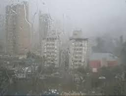

O decreto n° 9.854 de 25 de junho de 2019, instituiu o Plano de Internet das Coisas (IOT) e no artigo 4° indica os ambientes para aplicações em IOT. Nesta esteira a vertical de Cidades Inteligentes fazem parte deste escopo. O conceito de casas inteligentes se enquadram nesta vertical com aplicações em IOT que proporcionam benefícios aos seus proprietários através do monitoramento de sensores em tempo real conectados aos objetos da casa. O objetivo dessa Aplicação da Janela Inteligente é complementar no monitoramento da chuva nas cidades, coletando a hora do início da precipitação (chuva) e o término no intervalo da hora (60 minutos), nos bairros. Atualmente essas informações a respeito do tempo estão disponíveis por cidades, então, essa aplicação poderá integrar com seus dados automatizados as redes que alimentam os modelos meteorológicos de previsão de tempo.
Start and end of Rain
